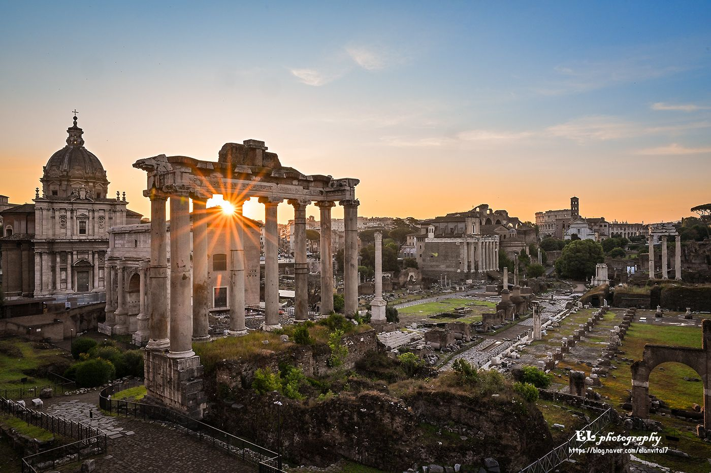
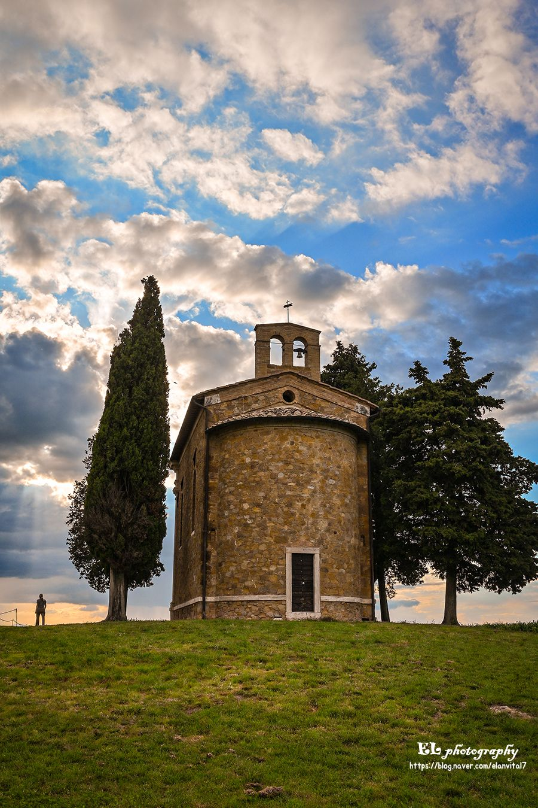
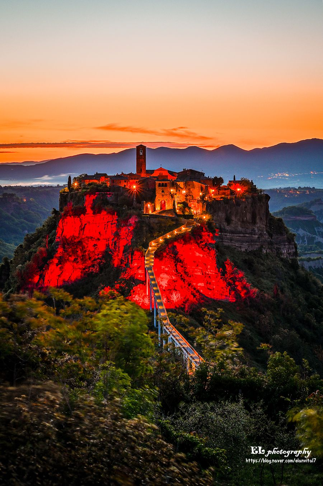
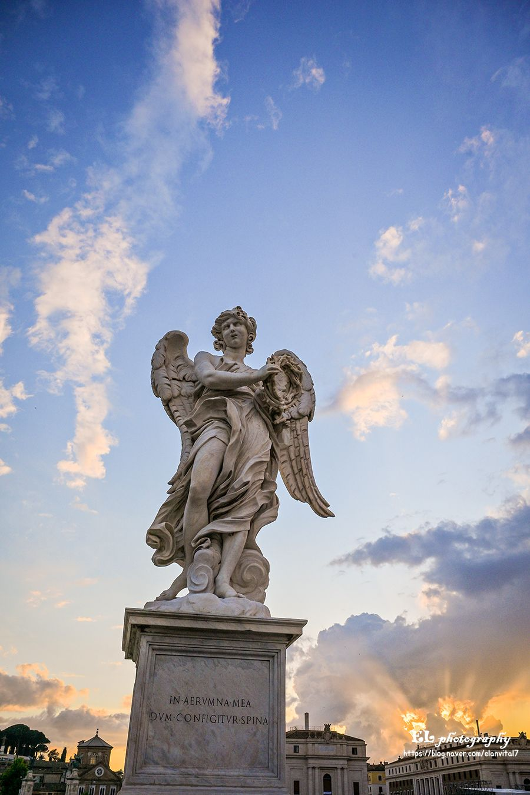
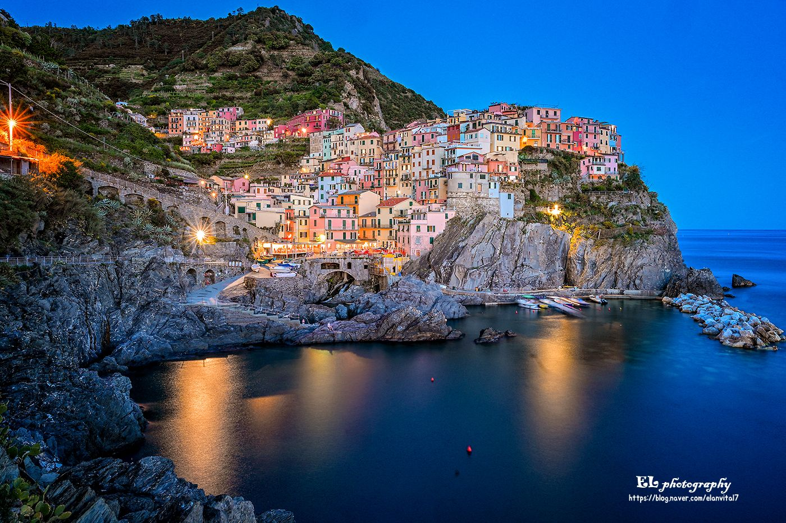
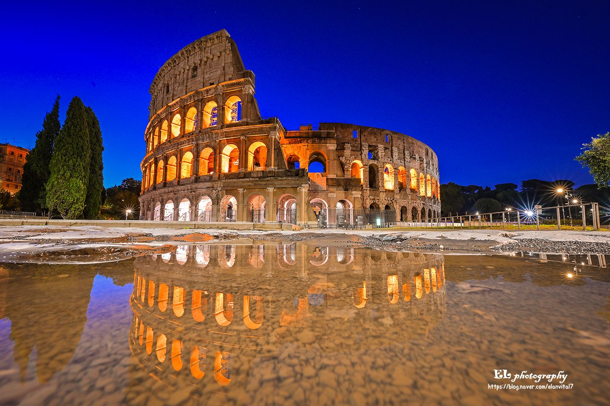
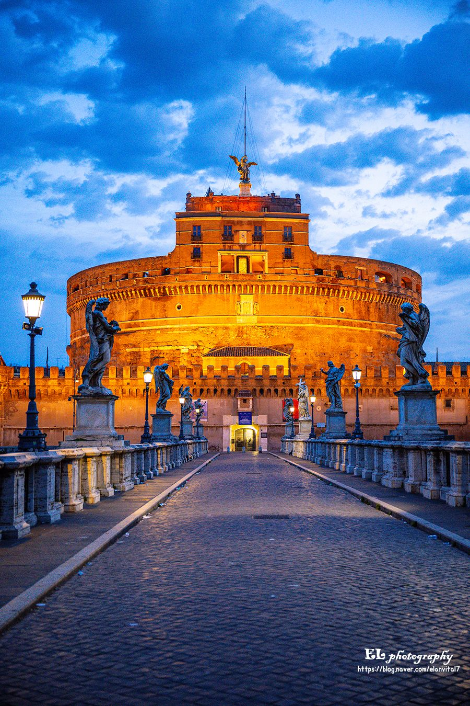
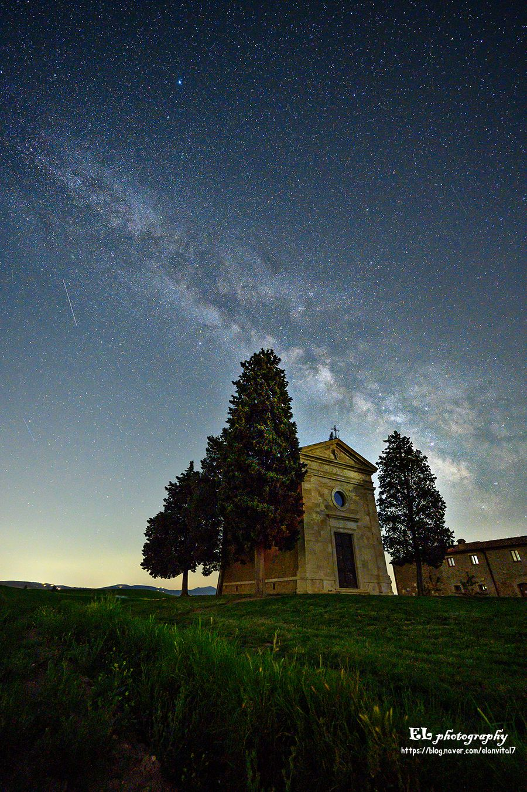

EL PHOTOGRAPHY
새벽에서 별빛까지 · 아홉 장의 사진
표지를 눌러 펼쳐보세요
Foro Romano, Roma
무너진 기둥 사이로, 하루의 첫 빛이 들어온다.
Ⅰ / Ⅸ
Val d'Orcia, Toscana
두 그루 사이프러스가 지키는 작은 예배당.
Ⅱ / Ⅸ
Firenze, Toscana
두오모의 돔 위로 저녁이 번진다.
Ⅲ / ⅨCivita di Bagnoregio
'죽어가는 도시'가 붉게 물드는 시간.
Ⅳ / Ⅸ
Ponte Sant'Angelo, Roma
돌 천사의 어깨 너머로 해가 진다.
Ⅴ / Ⅸ
Cinque Terre
파스텔빛 마을이 바다에 그대로 비친다.
Ⅵ / Ⅸ
Roma
빗물 웅덩이 위로, 또 하나의 콜로세움.
Ⅶ / Ⅸ
Castel Sant'Angelo, Roma
가로등이 하나씩, 성벽을 밝히는 시간.
Ⅷ / Ⅸ
Val d'Orcia, Toscana
낮의 예배당 위로, 은하수가 흐른다.
Ⅸ / Ⅸ
박성욱 · EL Photography
blog.naver.com/elanvital7
끝까지
봐주셔서
감사합니다